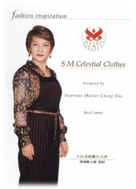
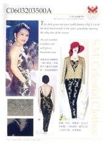
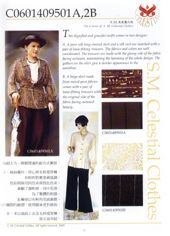
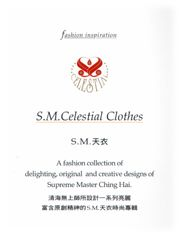
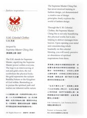

| Art Suprême |
|
|
|    |
Le Maître Suprême Ching Hai n'a jamais reçu de formation conventionnelle en dessin de mode, pourtant Elle témoigne d'un usage hautement original des principes de création en explorant librement le monde de l'élégance. A travers Ses collections de Vêtements, le Maître Suprême Ching Hai n'embellit pas seulement le monde physique, mais aussi, aide à délivrer des messages du paradis, partageant avec le monde, la véritable bénédiction apportée par ses créations exquises.
Ce superbe album commémoratif représente des précieuses photos de notre beau Maître portant ces propres créations de Vêtements Célestes, expliquant comment assortir des articles de la manière la plus parfaite. Des légendes en anglais et chinois décrivent chaque dessin et style, et sont agrémentées par des photos en couleurs d'échantillons de chaque tissu ce qui donne une meilleure appréciation des sublimes idées créatrices de Maître et de l'art des robes élégantes.
Ce n'est pas seulement un album sur la beauté mais aussi un volume de référence sur la mode des spécialistes. Un livre qui mérite d'être conservé avec soin. La Compagnie des Vêtements Célestes S.M. vous invite à apprécier cet "illustré sur l'exposition des Vêtements Célestes de mode".
Pour plus d'information, contacter la Compagnie des Vêtements Célestes S.M. la Beauté par téléphone au 886-2-87910860.
|  |
|
|